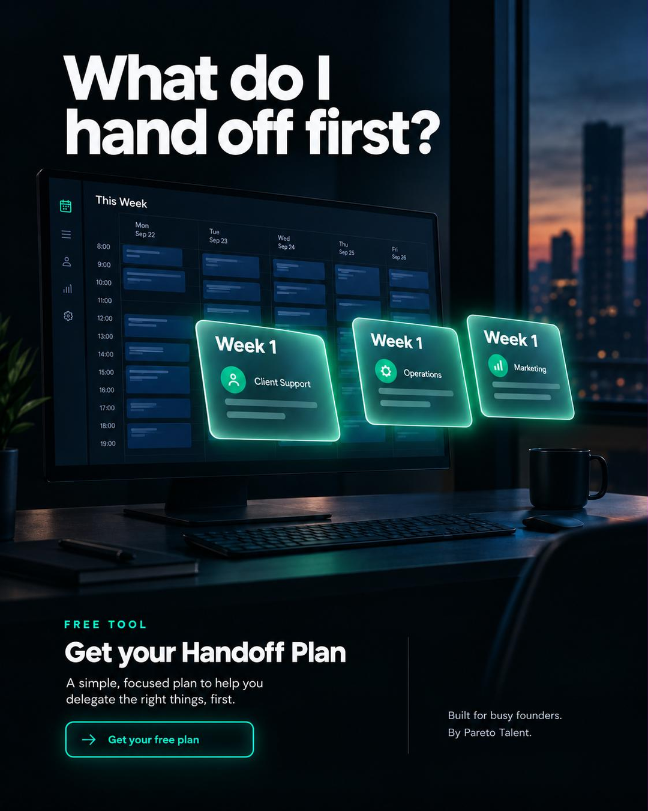
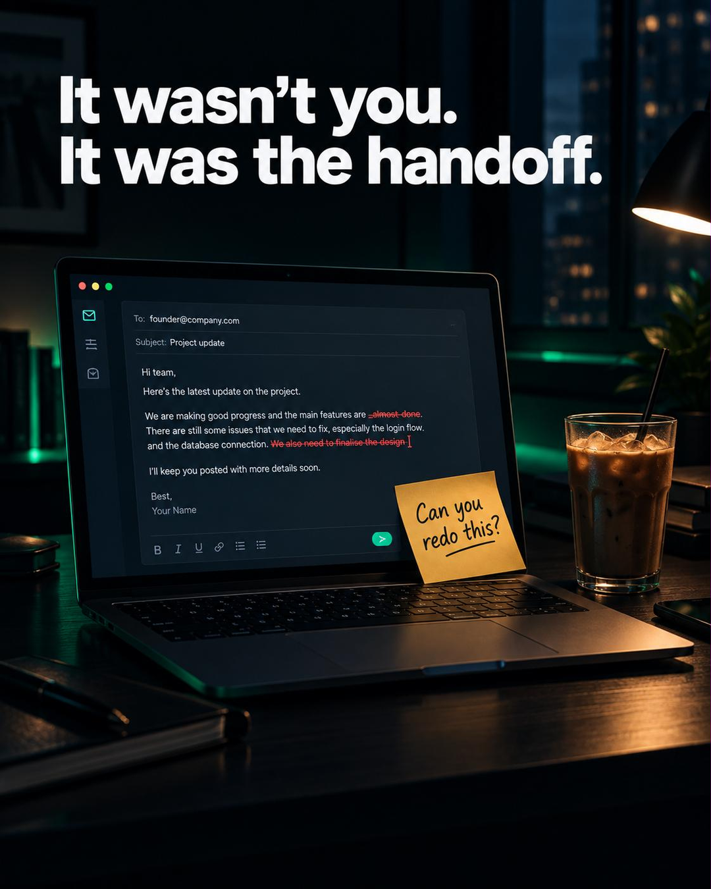
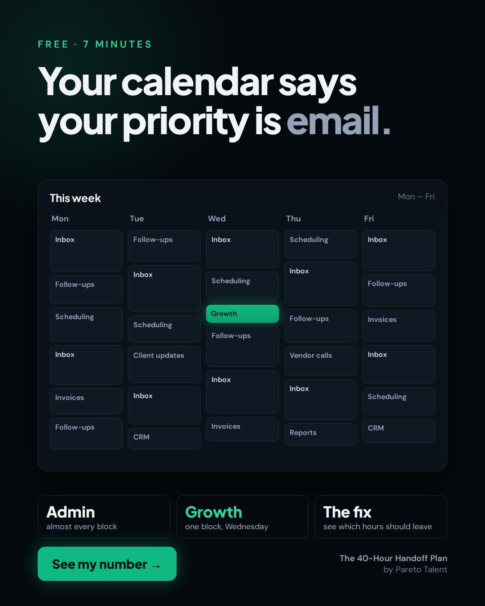
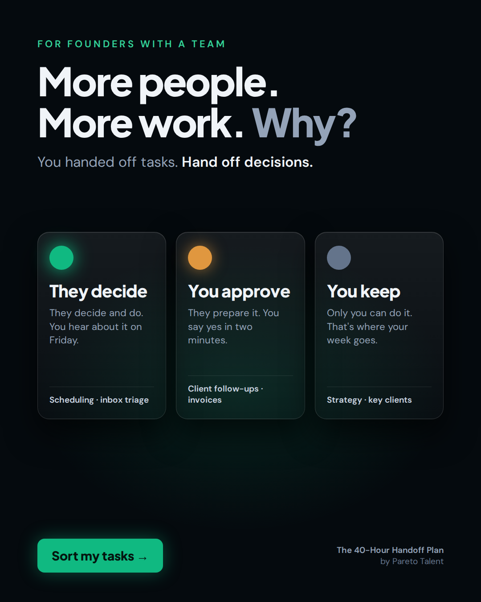
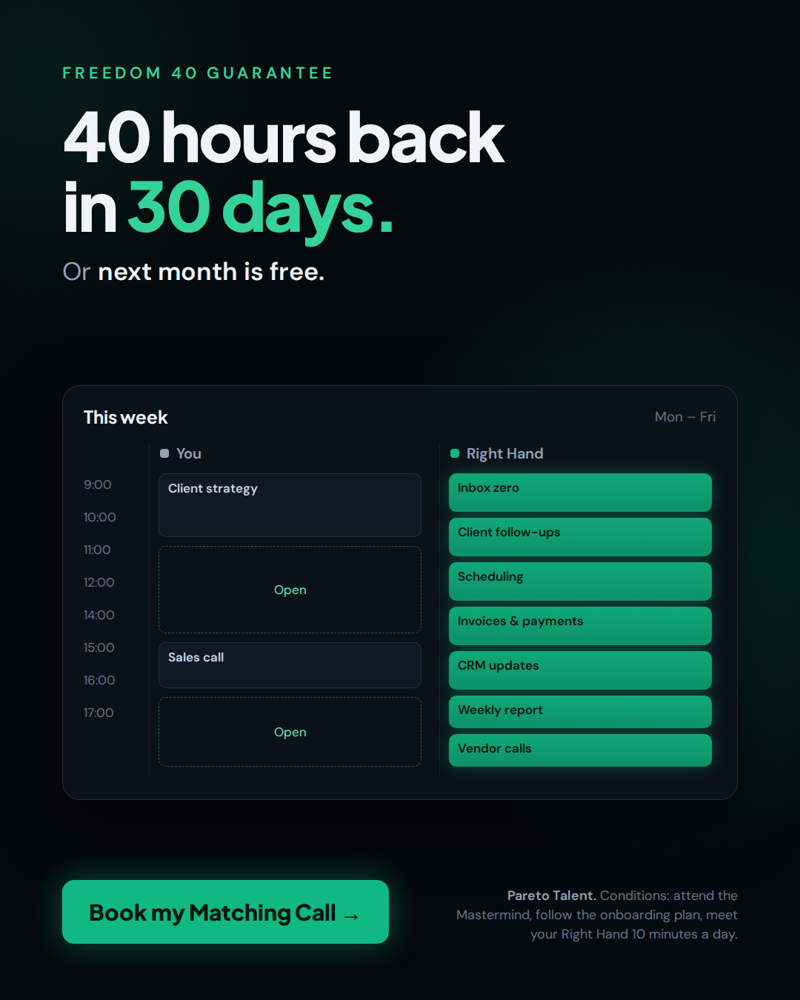

Five ads, five different messages
FP | Abdelhakim Boukeffoussa | Ads · Meta feed, 4:5 (1080×1350)
Each ad is a different persona × angle from the 182-quote voice-of-customer bank (L2). Ads 1–4 send cold and warm founders to the landing page (the free plan). Ad 5 retargets founders who built a plan and sends them to the booking page.
Every ad has the same six parts: hook · offer · qualifier · proof · mechanism · CTA. Every number is Pareto's own (paretotalent.com).
| File | Stage | Persona × angle |
|---|---|---|
| FP_AbdelhakimBoukeffoussa_Ad1.png | ToF | The Reluctant × know what to hand off first |
| FP_AbdelhakimBoukeffoussa_Ad2.png | MoF | The Burned × it wasn't you, it was the handoff |
| FP_AbdelhakimBoukeffoussa_Ad3.png | ToF | The Ceiling × your calendar tells the truth |
| FP_AbdelhakimBoukeffoussa_Ad4.png | MoF | The Stacked Staff × an owner, not a task-taker |
| FP_AbdelhakimBoukeffoussa_Ad5.png | BoF | The Ceiling × Freedom 40 (retargeting) |


Ad 1 · ToF · The Reluctant × "know what to hand off first"

- Hook: You're not bad at delegating. Nobody told you what to hand off first.
- Offer: The 40-Hour Handoff Plan, free. Your first 30 days of delegation, mapped in 7 minutes.
- Qualifier: For founders who still run their own inbox.
- Proof: Built on the delegation method Pareto Talent uses with 100+ founders.
- Mechanism: 1) Tick the tasks eating your week. 2) Get a week-by-week plan. 3) Copy a ready-to-send brief for every task.
- CTA: Download → "Get my free plan" · Headline: Your first 30 days of delegation, mapped
Image prompt (ChatGPT image, Pareto palette screenshot attached):
Facebook ad image for a free delegation tool for busy founders. A founder's weekly calendar on a large monitor in a dark, modern office at dusk, packed solid with dark navy blocks. Three blocks lift off the screen and float forward as glowing glass cards labeled "Week 1". Top text in white bold sans: "What do I hand off first?" Use the style guide and only the colors in the attached palette. 4:5.
Iteration (one change, not a new image):
Keep everything exactly the same. Only change: the headline must read 'What do I hand off first?' (two words: hand off), and make the three floating cards all clearly read 'Week 1'.
Ad 2 · MoF · The Burned × "it wasn't you, it was the handoff"

- Hook: Your last assistant didn't fail. Your handoff did.
- Offer: A free plan that writes the brief for every task before you hand it off.
- Qualifier: If you hired help and ended up doing the work twice, this is for you.
- Proof: Pareto Right Hands stay: 93% are still with Pareto after 12 months.
- Mechanism: Every task gets a Black Box brief: goal, context, constraints, definition of done, decision latitude.
- CTA: Download → "Build my plan" · Headline: Hand off the context, not just the task
Image prompt (ChatGPT image, same conversation, palette attached):
New image, same style guide and the same attached palette (near-black #050A0E, navy #0F1923, one accent green #10B981, white text #F0F4F8, bold geometric sans like Plus Jakarta Sans ExtraBold, no logos, no purple, no stock smiles). Facebook ad image for founders whose last assistant didn't work out. A desk at night, a laptop showing an email draft with red edits, a yellow sticky note on the laptop that reads exactly 'Can you redo this?' beside a cold coffee. Moody, cinematic, warm practical light against a near-black room with a subtle green glow. Top text in white bold sans, exactly: 'It wasn't you. It was the handoff.' No other text on the image except the sticky note. 4:5 vertical.
Ad 3 · ToF · The Ceiling × "your calendar tells the truth"

- Hook: Your calendar says your priority is email.
- Offer: Find the hours you shouldn't be working, and what they cost you. Free, 7 minutes.
- Qualifier: For founders doing $50K+ a month whose growth stops where their calendar does.
- Proof: 100+ founders served · 4.9★ on Google.
- Mechanism: Tick your tasks → see hours a week and dollars a month → get the plan to move them.
- CTA: Download → "See my number" · Headline: The work you shouldn't be doing anymore
How it was made: a calendar is interface, not a photo, so this one was built with AI as code (HTML/CSS, Pareto's real fonts and colors from the site CSS), the way Candela showed Claude Design in Day 7. The brief I gave:
Ad image, 1080×1350, Pareto brand (near-black #050A0E, surfaces #0B1119, one accent #10B981, Plus Jakarta Sans 800 headlines, DM Sans body). Headline: "Your calendar says your priority is email." A dark-mode week calendar, Monday to Friday, where almost every block reads Inbox, Follow-ups, Scheduling, Invoices or CRM, and one small glowing green block on Wednesday reads Growth. Under it, three tiles: Admin / Growth / The fix. Green CTA "See my number".
Ad 4 · MoF · The Stacked Staff × "an owner, not a task-taker"

- Hook: You hired people. Somehow you got more work.
- Offer: A free 30-day handoff plan that separates what they decide alone from what you approve.
- Qualifier: For founders with a team who still manage every task by hand.
- Proof: Pareto's green / yellow / red decision model, used with every Right Hand placement.
- Mechanism: Green = they decide and do. Yellow = they prepare, you approve. Red = you keep it.
- CTA: Download → "Sort my tasks" · Headline: Stop managing tasks. Hand off decisions.
How it was made (AI as code, same as Ad 3). The brief:
Ad image, 1080×1350, Pareto brand. Headline: "More people. More work. Why?" Subline: "You handed off tasks. Hand off decisions." Three frosted-glass cards with a light each: green "They decide", amber "You approve", grey "You keep", each with one line on what it means and two example tasks. Green CTA "Sort my tasks".
Ad 5 · BoF · The Ceiling × "Freedom 40" (retargeting plan downloaders)

- Hook: You made the plan. Now hand it to someone who runs it.
- Offer: A 20-minute Matching Call. 3 hand-picked, pre-trained Right Hand profiles within 24 hours.
- Qualifier: For founders doing $100K+ a month whose plan shows 10+ hours a week.
- Proof: 1,000+ applicants per placement · 93% still with Pareto after 12 months.
- Mechanism and risk reversal: Freedom 40: attend the Mastermind, follow the onboarding plan, meet your Right Hand 10 minutes a day. 40 hours back in your first 30 days, or your next month is free.
- CTA: Book now → "Book my Matching Call" · Headline: 40 hours back in 30 days. Or next month is free.
How it was made (AI as code). I started in ChatGPT, but the free plan's image limit ran out after Ad 2. A calendar is interface anyway, so code renders it exactly, and the guarantee's three conditions fit on the image. The brief:
Ad image, 1080×1350, Pareto brand. Headline: "40 hours back in 30 days." Subline: "Or next month is free." A split week calendar in dark mode: the "You" column mostly open (Client strategy, Sales call, two Open slots), the "Right Hand" column full of green blocks (Inbox zero, Client follow-ups, Scheduling, Invoices & payments, CRM updates, Weekly report, Vendor calls). CTA "Book my Matching Call", with the Freedom 40 conditions in small print.
The style guide used for every image
Premium, cinematic, editorial photography mixed with clean UI cards. Near-black background (#050A0E), deep navy surfaces (#0F1923), one accent: Pareto green (#10B981), with a soft green glow. Headline text in a bold geometric sans (Plus Jakarta Sans ExtraBold), white (#F0F4F8). No stock-photo smiles, no clutter, no logos, no purple. 4:5 vertical.
The palette screenshot attached to the prompts is in the imagery folder (L14).